🚘 Hình ảnh xe dịch vụ Thuận An Bình Dương
Tham khảo 29 hình ảnh xe dịch vụ. Liên hệ để được tư vấn loại xe và lịch trình phù hợp.
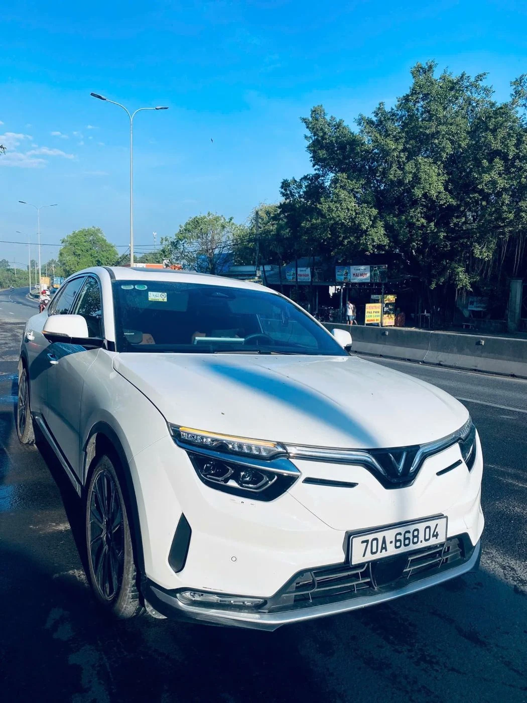
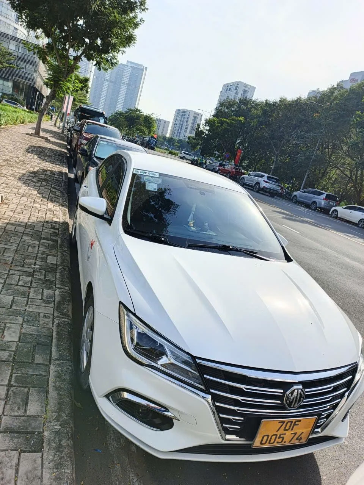

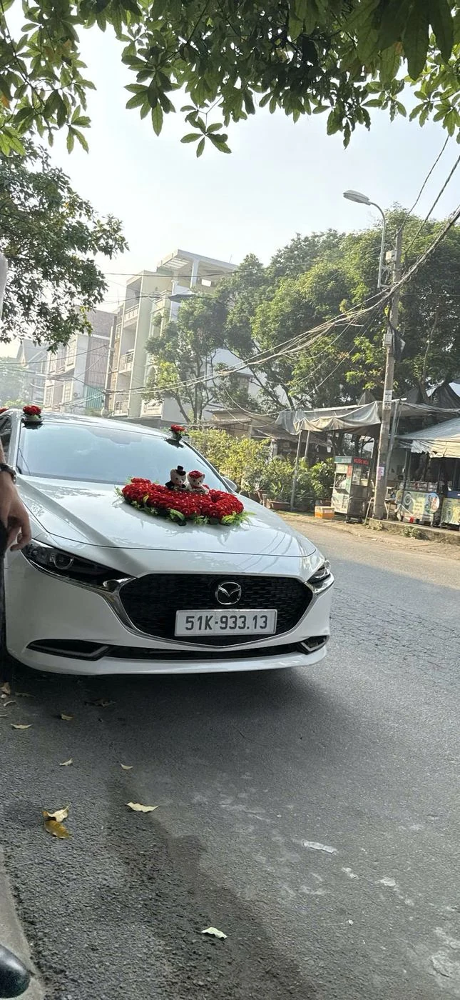
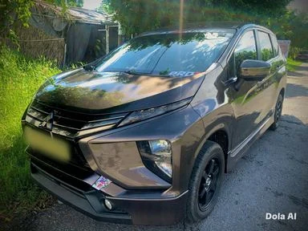
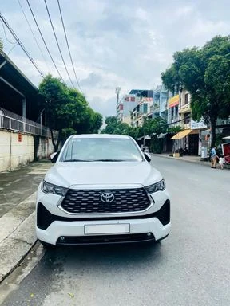
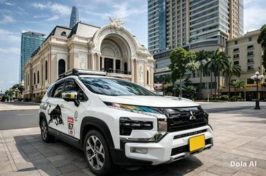
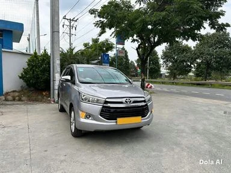
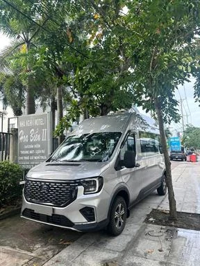
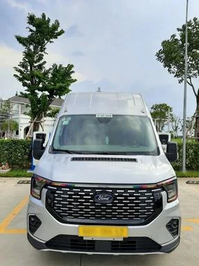
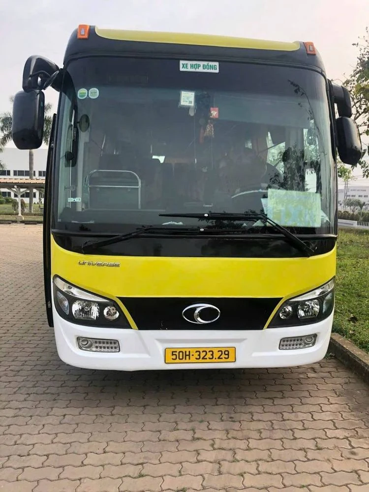
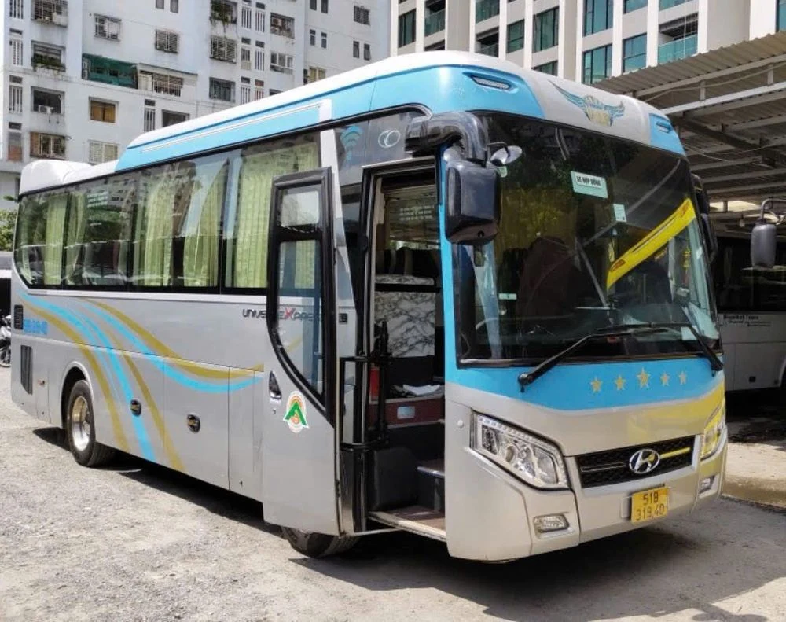
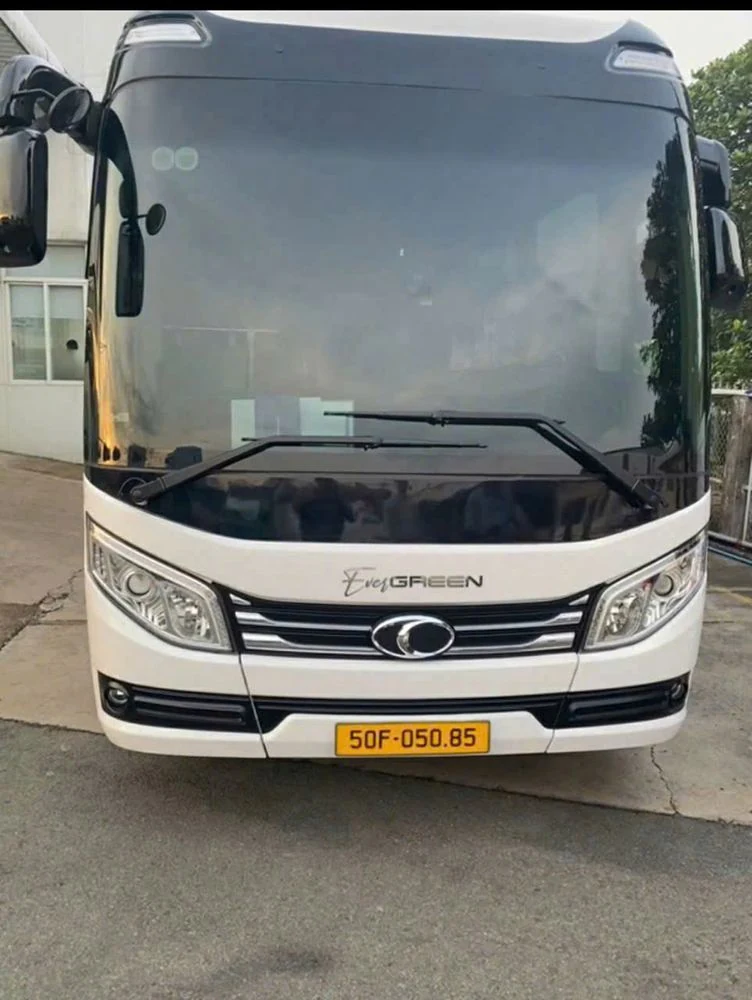
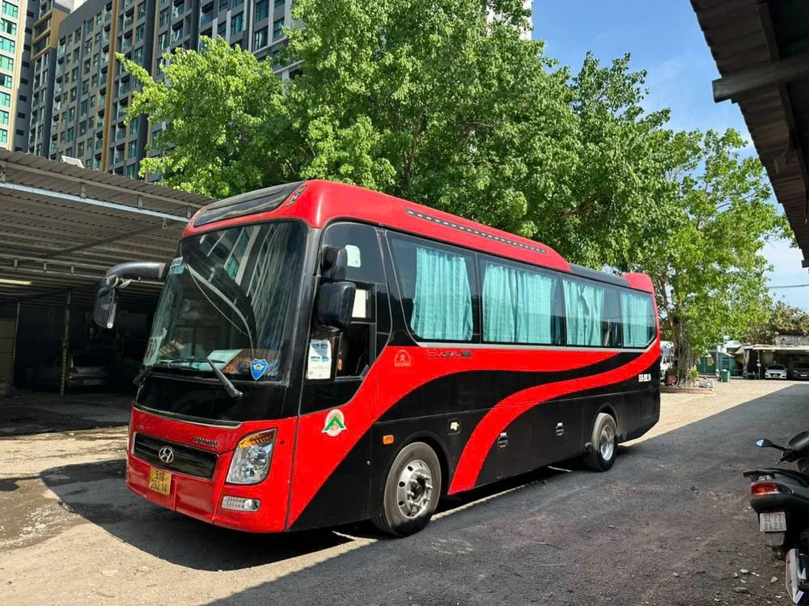
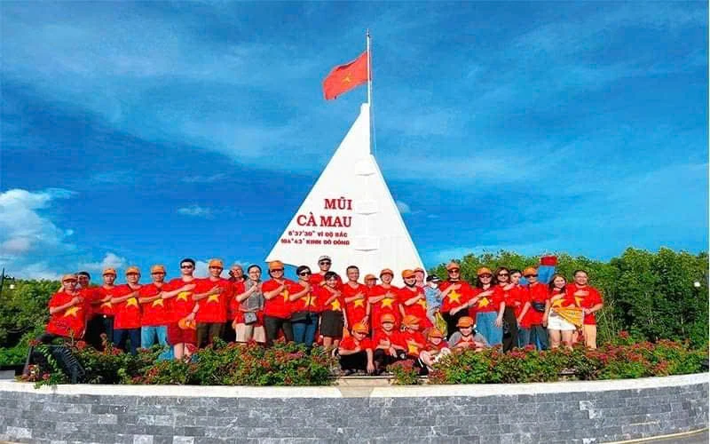
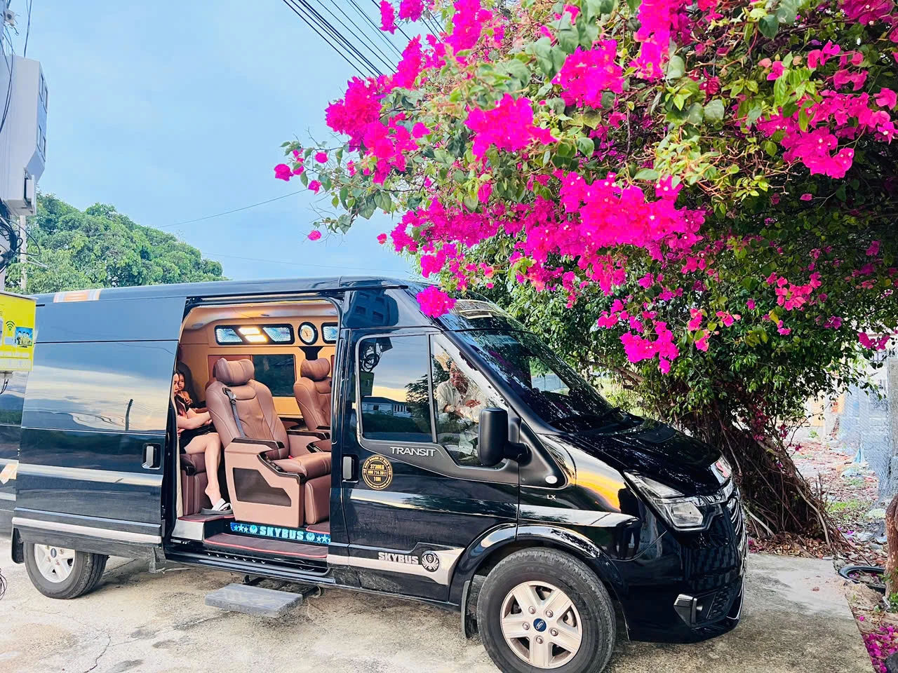
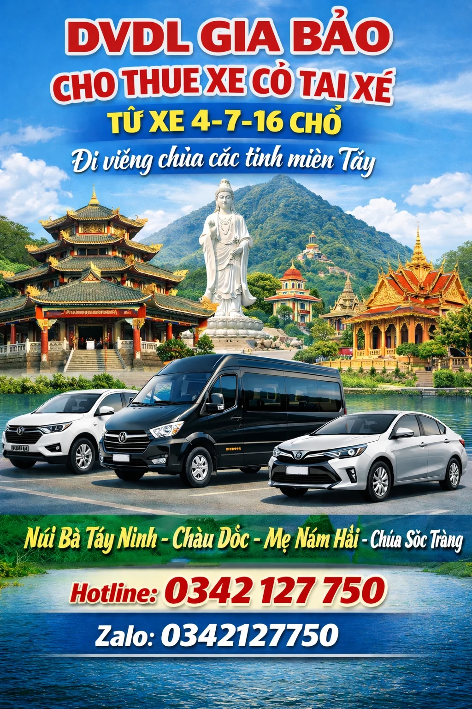
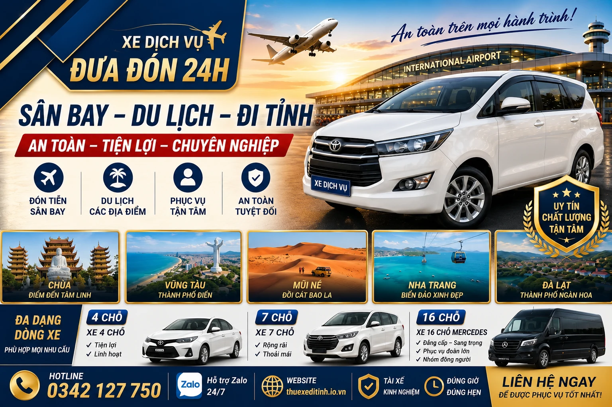
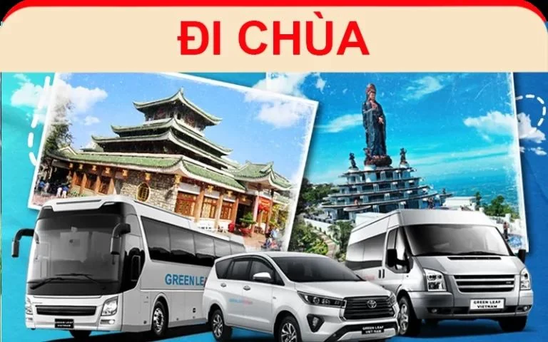
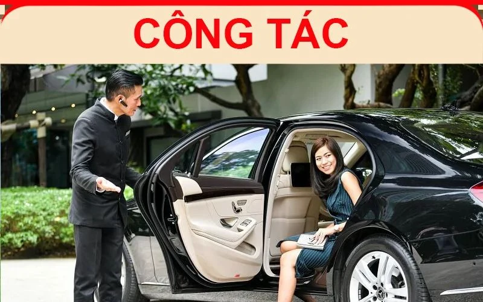
Thuê xe Thuận An Bình Dương có tài xế – phục vụ 24H
Thuê xe Thuận An phù hợp cho khách hàng cần xe riêng có tài xế, đón tận nơi tại Thuận An và di chuyển theo lịch trình. Dịch vụ có xe 4 chỗ, 7 chỗ, 16 chỗ và 29 chỗ, phục vụ nhiều nhu cầu khác nhau.
Nếu cần thuê xe có tài xế Thuận An để đi sân bay, đi tỉnh, du lịch, cưới hỏi, đưa đón gia đình hoặc đi công tác, khách có thể liên hệ để được tư vấn loại xe và lịch trình phù hợp.
Dịch vụ thuê xe tại Thuận An
- Thuê xe 4 chỗ Thuận An có tài xế
- Thuê xe 7 chỗ Thuận An có tài xế
- Thuê xe 16 chỗ Thuận An cho gia đình, đoàn nhóm
- Thuê xe 29 chỗ Thuận An cho đoàn đông người
- Thuê xe đi sân bay từ Thuận An, xe đưa đón sân bay Thuận An
- Thuê xe đi tỉnh từ Thuận An và thuê xe du lịch Thuận An
- Thuê xe hợp đồng Thuận An cho cá nhân, gia đình và doanh nghiệp
- Thuê xe cưới hỏi Thuận An, thuê xe gia đình Thuận An
- Thuê xe công tác Thuận An và đặt xe Thuận An theo lịch trình
Xe dịch vụ Thuận An nhận đón tận nơi, hỗ trợ tư vấn nhanh và phục vụ theo nhu cầu thực tế của khách hàng.
Thuê xe Thuận An Bình Dương có lái – đón tận nơi
Dịch vụ phục vụ khách cá nhân, gia đình, công ty, đưa đón sân bay, về quê, đi tỉnh, du lịch, cưới hỏi và các chuyến đi theo lịch trình riêng.